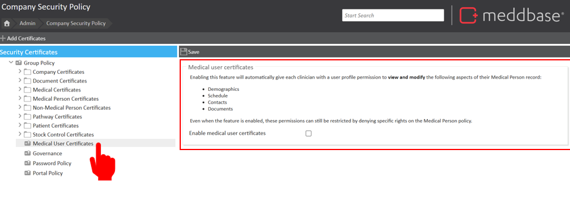
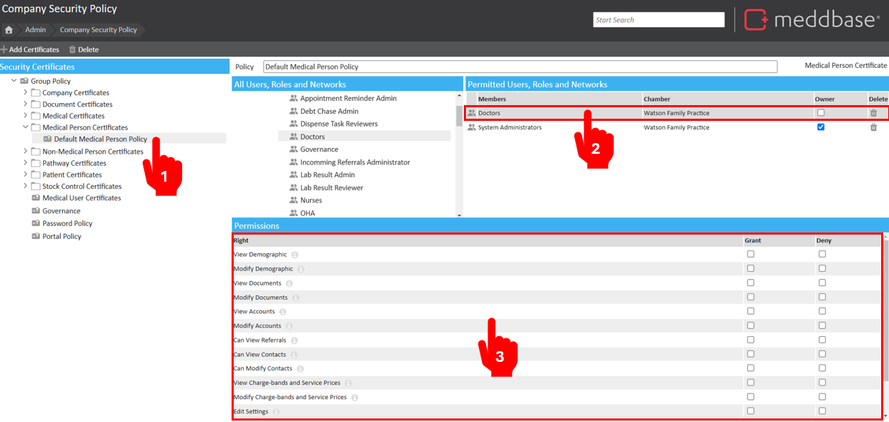
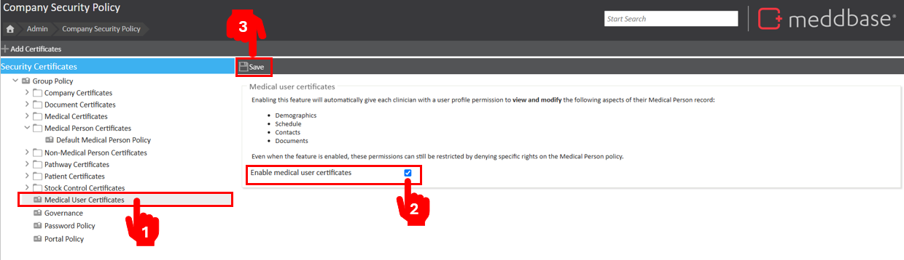

Security Policies govern different aspects of data security in Meddbase. Each policy type (or certificate) governs a set of user permissions. These permissions determine if or how users will be able to interact with data protected by a given policy or certificate, e.g. Company record protected by a Company Policy or patient record protected by a Patient Policy.
There are two certificates which govern how users can interact with Medical Persons in the chamber, these are:
By default, the Medical Person Certificate allows medical users to view and modify both their own and other clinicians' information. In contrast, the Medical User Certificate restricts access to only their own records, enhancing data privacy.
This feature is centred around role groups and Security Policies within Meddbase. Many permissions need to be used in conjunction with permissions governed by other certificates e.g. Company Certificate(s). If you are not familiar with these governance aspects of the application, please feel free to read through the two articles linked directly below.
• Security Polices
• Role Management
This article explains the functionality and application of Medical User Certificates. It aims to clarify how these certificates control access to clinicians' demographic information within the system. This guidance will assist administrators in configuring access rights.
Enabling this feature will automatically give each clinician with a user profile permission to view and modify the following aspects of their Medical Person record. Even when the feature is enabled, these permissions can still be restricted by denying specific rights on the Medical Person policy.
To access the Medical User Certificate, a permitted User should:
From the Start Page navigate to Admin
Click Security Policy.
Click Medical User Certificates.

The aspects affected by this are as follows:
Please read through and understand the changes this will make to your chamber before committing them as this may cause disruption to your users.
Before enabling the feature, assess the restrictions for how Medical Users can view each other's demographics and their own.
In the example below, no permissions are granted to prevent clinicians from accessing or modifying each other’s information.

After restricting all clinician rights, we need to restore their access so they can only edit their own information. To do this:
Once save is clicked, a dialog box will appear here showing how many clinician records are being updated and show you the progress of these changes. This may take a while if you have a large number of clinician records. You can close this entire page and come back at a later stage to see the progress if need be.

Important to Note:
After completing Step 1, clinicians in the affected role group will have limited access until Step 2 is finished. We recommend testing this on a small role group or after hours to minimise disruption.
Step 2 grants clinicians full access to their own records. To restrict their actions on their own records, use the deny checkbox in Step 1.
While viewing a patient's appointment history, clinicians can access appointments with others and see any medical findings or history. However, the names of clinicians from these historical appointments will be removed.